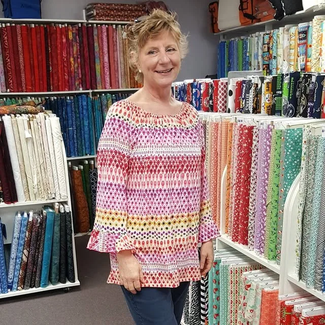
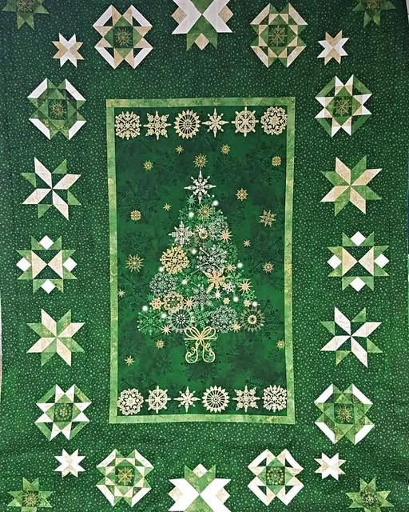
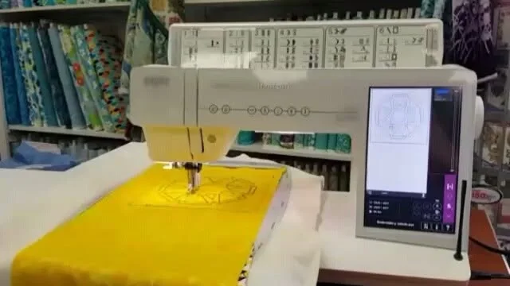

Fabric · machines · notions
Come see it in person.
We stock machines, fabric, hundreds of notions, including the latest in sewing, quilting & embroidery supplies. Call us if you are looking for something in particular. If we don’t have it in stock, we will try to order it for you!

The fabric wall
Quilting cottons, batiks and panels, on the bolt.
Lines on the shelves
- Avlyn
- Andover
- Bali Batiks
- Benartex
- Blank
- Blue Hill
- Elizabeth Studios
- Fabri Quilt
- Free Spirit
- Fronds
- Hamil
- Henry Glass
- Hoffman California
- Lakehouse
- MarcusBros.
- Maywood
- Michael Miller
- Moda
- Northcott
- Paintbrush
- P & B
- Quilting Treasures
- RJR
- Red Rooster
- Riley Blake
- Robert Kaufman
- South Seas
- Spectrix
- Studio E
- Sykel
- Timeless Treasures
- Windham
- & more!





Game day fabric.
- COLLEGE fleece, minky & cotton panels in stock
- Some shown: Alabama, Florida, Tennessee, N. Carolina
- NFL team fat quarters, when available
“They also carry tons of other colleges, NFL teams, MLB teams, and other fabrics you can’t find in other stores.”Camille Benson, Google review, a year ago
Machines
We sell & service sewing & embroidery machines, quilting machines, & sergers. We are authorized to sell Baby Lock, PFAFF, Singer and Husqvarna. Come see them in the store.


Baby Lock
- Altair
- Solaris 2
- Aerial
- Aventura II
- Venture
- Intrepid
- Alliance
- Crescendo
- Aria
- Soprano
- Jazz II
- Accomplish
- Jubilant
- Joy
- Zest
- Brilliant
- Coronet
- Regalia
- Lyric
PFAFF
- creative icon
- performance icon
- creative 4.5
- creative 3.0
- expression 720
- expression 710
- passport 3.0
- passport 2.0
- ambition 610
- ambition 620
- quilt ambition 630
- select 4.2
- powerquilter p3
- powerquilter 16.0
Husqvarna Viking
- DESIGNER EPIC 2
- DESIGNER RUBY 90
- DESIGNER SAPPHIRE 85
Owner: these models come from the machines page on your current site, which says it is being updated. Send the current lineup (Singer included) and this becomes the real list.
Notions, feet, hoops and software
Hundreds of notions. Presser feet like the 1/4" foot with IDT, open toe 9mm, seam guide and bi-level topstitching feet. Hoops like the Creative Grand Dream Hoop and the Creative Endless Hoop. 5D Embroidery Software. Embroidery supplies & designs, parts and cabinets.
No online checkout on purpose. Call the store and they’ll tell you if it’s on the shelf.
Looking for something?
Knoxville (865) 690-7770
Goodlettsville (615) 859-9900
Customer discount on everything you buy to go along with your machine, for SME Perks owners. *See store for details.
Visit both stores